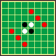

◆キャラクター紹介◆
指定した石を、青石に変える。 青石は常にそのターンのプレイヤーの石として扱う。
指定した空きマス（例：黄色）に地雷を埋めこむ。 地雷の上に石が置かれると爆発し、その周囲の斜めにある石が反転する。
指定した石に爆弾を設置する。 設置された石が引っくり返ると爆発し、縦横の石が反転する。 設置された石は何の変化も起きない。
赤の範囲に置いてある石が反転する。
赤の範囲に置いてある石を破壊する。
赤の範囲に置いてある石が、全て自分の石になる。
パワーポイントを強制的に移動させる。
赤の範囲の石全てを青石に変える。 青石は常にそのターンのプレイヤーの石として扱う。
赤の範囲の石全てを透明石に変える。 赤石は常にそのターンの敵プレイヤーの石として扱う。
赤の範囲の石全てを透明石に変える。 この石は、どちらのプレイヤーの石にも属さない。
相手プレイヤーの画面が見辛くなる。
効果無し。石が引っくり返る音がし、着色の文字が出てくる。
フィールドに置いてある青石、赤石、透明石のいずれかひとつの着色を解除することが出来る。 青石、透明石→自分の石 赤石→敵の石
指定した石を、透明石に変える。 この石は、どちらのプレイヤーの石にも属さない。
フィールド内の爆発物（爆弾、地雷）全てを除去する。
指定したマス（例：黄色）の横一列の石全てを５ターン凍結させる。 凍結している間は石が引っくり返ることは無い。

赤の範囲に置いてある石が、全て反転する。
５ターンの間、お互いのイカサマゲージが増えなくなる。
指定した石を、赤石に変える。 赤石は常にそのターンの敵プレイヤーの石として扱う。
指定した空きマス（例：黄色）に地雷を埋めこむ。 地雷の上に石が置かれると爆発し、地雷の置いてあったマスの石が反転する。
指定した石に爆弾を設置する。 設置された石が引っくり返ると爆発し、斜めの石が反転する。 設置された石は何の変化も起きない。
互いに次のターンは、イカサマを使用できなくなる。 例：黒封印使用→白×→黒×
指定した空きマス（例：黄色）に地雷を埋めこむ。 地雷の上に石が置かれると爆発し、その周囲の縦横にある石が反転する。
全ての空きマスに地雷を埋めこむ。 地雷の上に石が置かれると爆発し、地雷の置いてあったマスの石が反転する。
パワーポイント上に存在する全ての石が反転する。
指定したマス（例：黄色）の縦一列の石全てを５ターン凍結させる。 凍結している間は石が引っくり返ることは無い。
赤の範囲に置いてある石が、全て敵の石になる。 青の範囲の石を破壊する。
ランダムで横一列の石を反転する。 この反転は周囲に影響を及ぼさない。
ランダムで地雷か爆弾を設置する。
ランダムで縦一列の石を青石にする。
いつものところwebpage http://www.cokage.ne.jp/~hiiragi/